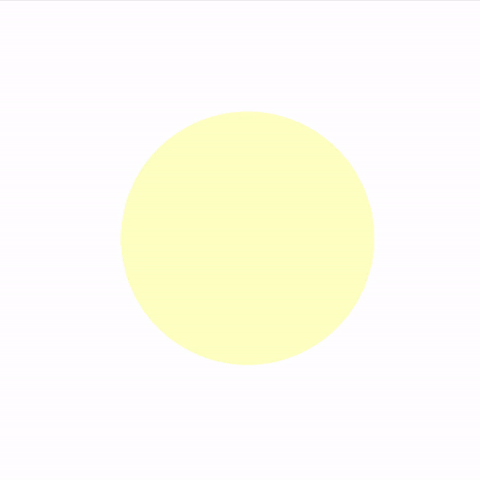

My Projects
Conway's Game Of LifeThe universe of the Game of Life is an infinite, two-dimensional orthogonal grid of square cells, each of which is in one of two possible states, live or dead (or populated and unpopulated, respectively). Every cell interacts with its eight neighbours, which are the cells that are horizontally, vertically, or diagonally adjacent. At each step in time, the following transitions occur:
Made with Vanilla JavaScript |
 |
EnspiraledFractal made of circles. Click on each circle creates four more circles. Made with React JS |
 |